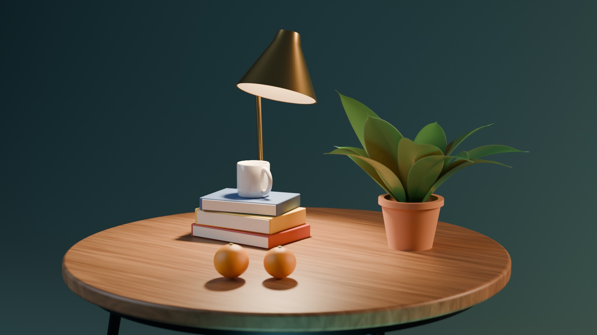
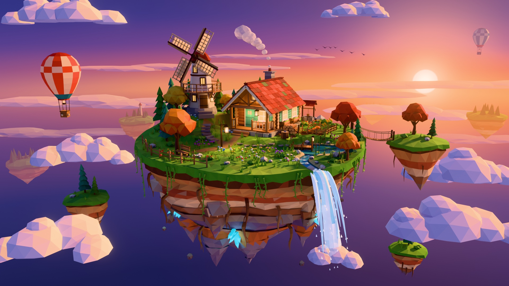
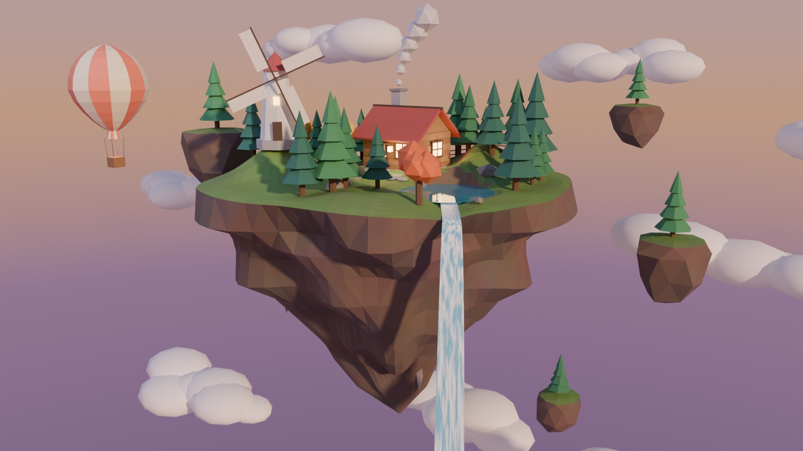
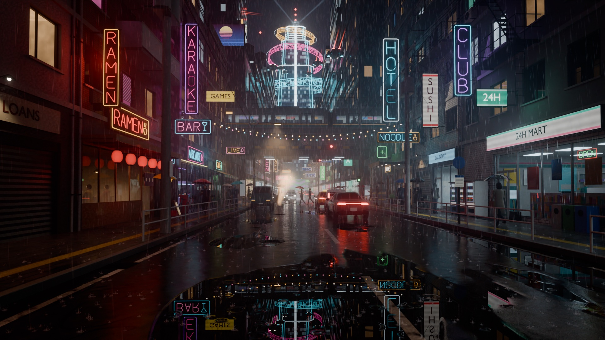
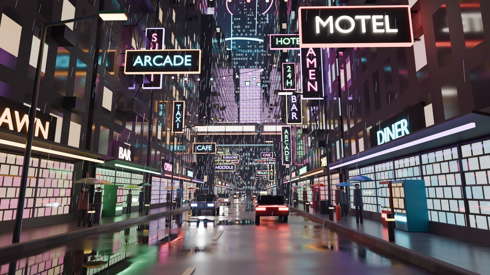

Blender 5.2.1 · Cycles · 1920×1080 · all Python, no assets
Three Blender scenes were written as Python scripts. First in one fast session. Then again by three separate agents at max effort, one scene each, told what the first versions got wrong.

v1

v1

v1Scene 1 · simple, but not basic
A side table with a brass lamp, three books, a mug, a plant and two oranges. Same subject both times.
What differs from Blender: the wood, cloth, glaze and brass patterns are baked into one texture, so they go soft when you zoom far in. Surface bumps are flat. The steam over the mug is a volume and is not shown. Light is real-time: no bounce light, no soft depth of field, and the lamp light is harder than in the render.
Create 3 3d scenes with scenes in blender using blender mcp , one simple but still not a basic , second bit more complex and 3rd very complex lets go
No scene was named. The model picked the subject for each level itself.
run same 3 on max effort 3 seperate agents
The main session turned that into one brief per agent. This is the exact brief for this scene:
Build a high-quality 3D scene in Blender and render it. You own this one scene end to end. Take the time to make it look genuinely good — iterate on previews until it does. ## The scene: "simple, but not basic" — lamp-lit still life A round wooden side table with a brass desk lamp, a stack of three books, a ceramic mug, a potted plant and two oranges, against a dark teal seamless backdrop. Moody warm lamp light plus a cool key and a warm rim. Shallow depth of field. A first version already exists. Your job is to make a clearly better v2 of the same idea — same subject, much higher craft. Look at the first version before you start: - Render: blender-scenes/renders/S1_StillLife_0001.png (Read it — it is an image) - Script: blender-scenes/scene1_still_life.py - Shared helpers: blender-scenes/common.py (mesh builders, materials, lights, camera, Cycles setup) Where v1 is weak, and where to push: geometry is primitive (lamp is a cone on a stick with no joint detail, switch, cord or bulb socket; books have no spine detail, titles or page edges; mug is plain; plant leaves are simple strips with no veins or stems; oranges are plain spheres); materials are flat (add roughness variation, fingerprints/wear, fabric or paper texture, glaze, subsurface on leaves and fruit, real wood grain with end grain on the table edge); composition and lighting can be more deliberate (light falloff on the backdrop, a visible pool of lamp light, steam from the mug, small story props such as reading glasses, a pencil, a bookmark, a coaster). Keep it a restrained still life — richer detail, not clutter. ## How to work (important — two other agents are building other scenes at the same time) - Do NOT use the Blender MCP tools (mcp__blender__*). There is one shared GUI Blender and three agents would clobber each other. Run Blender headless from the shell instead: `/Applications/Blender.app/Contents/MacOS/Blender -b --factory-startup -P your_script.py` (Blender 5.2.1 LTS, macOS, Metal GPU). With --factory-startup the GPU is not enabled by default; enable it in your script: set `bpy.context.preferences.addons['cycles'].preferences.compute_device_type = 'METAL'`, call `.get_devices()`, set every device `.use = True`, then `scene.cycles.device = 'GPU'`. Verify in the render log that it is really using the GPU. - Work only inside blender-scenes/v2/scene1/ (create it). Do not modify or delete anything outside that folder — the v1 files and the other agents' folders are off limits. You may copy common.py into your folder and change your copy freely. - Blender 5.2 API notes that held true in v1: Principled BSDF inputs are named "Base Color", "Roughness", "Metallic", "IOR", "Transmission Weight", "Coat Weight", "Subsurface Weight", "Emission Color", "Emission Strength", "Alpha". `Mesh.set_sharp_from_angle(angle=...)` exists. View transform "AgX". Material/world `use_nodes = True` may warn — wrap in try. When unsure of an API name, check it in a quick headless run rather than guessing. Build geometry with bmesh / the data API rather than bpy.ops where you can; it is more reliable headless. - Preview often at low cost (e.g. 50% resolution, 32–64 samples), Read the PNG, critique it honestly, fix, repeat. Check: nothing cut off by the frame, nothing floating or intersecting, focus on the right object, no blown-out or crushed areas, materials read correctly. - Rendering must be serialized across the three agents so the machine is not overloaded. Before ANY render (preview or final) take the lock, and release it after: `while ! mkdir blender-scenes/v2/.render.lock 2>/dev/null; do /bin/sleep 3; done; <blender render command>; rmdir blender-scenes/v2/.render.lock` Put the lock, render and unlock in ONE shell command so the lock is always released, and give that command a long timeout. If the lock looks stale (older than 15 minutes and no Blender render process running), you may remove it. - Disk is tight (about 8 GB free). Keep only the latest preview; delete old previews as you go. No EXR, no caches. ## Deliverables (all in blender-scenes/v2/scene1/) - `scene1_still_life_v2.py` — one re-runnable script that builds the whole scene from an empty file. - `scene1_still_life_v2.blend` — saved scene, materials and camera in place. - `S1_StillLife_v2.png` — final render, 1920x1080, Cycles, denoised, enough samples to be clean. ## Report back Reply with: the three file paths; object count and final render time; what you improved over v1 (short list); and any flaw still visible in the final render, stated plainly. Do not claim something is fixed unless you saw it in the final image.
v1 has the right objects. v2 has the details that make them objects.
Scene 2 · medium
An island in the sky with a cabin, a windmill, a pond and a waterfall at sunset. Same subject and low-poly style both times.
What differs from Blender: colours are baked into a texture. The sunset sky is a still panorama taken from the Blender file. Sun shadows are real-time and sharper, with no bounce light. The waterfall and smoke are see-through surfaces without the soft light scatter.
Fewer objects, more scene. v2 merges things like 190 flowers into single meshes, about 50,000 triangles in all.
Create 3 3d scenes with scenes in blender using blender mcp , one simple but still not a basic , second bit more complex and 3rd very complex lets go
No scene was named. The model picked the subject for each level itself.
run same 3 on max effort 3 seperate agents
The main session turned that into one brief per agent. This is the exact brief for this scene:
Build a high-quality 3D scene in Blender and render it. You own this one scene end to end. Take the time to make it look genuinely good — iterate on previews until it does. ## The scene: "medium complexity" — low-poly floating island at sunset A stylized low-poly island floating in the sky: grassy top, rocky underside tapering to a point, a wooden cabin with glowing windows and chimney smoke, a windmill on a hill, a pond with a stream that runs off the edge as a waterfall, pine and autumn trees, rocks, a fence, stepping stones, a lantern, small floating islets, clouds, a hot-air balloon, warm low sun and a sunset sky. A first version already exists. Your job is to make a clearly better v2 of the same idea — same subject and low-poly style, much higher craft. Look at the first version before you start: - Render: blender-scenes/renders/S2_FloatingIsland_0001.png (Read it — it is an image) - Script: blender-scenes/scene2_floating_island.py - Shared helpers: blender-scenes/common.py (mesh builders, materials, lights, camera, Cycles setup) Where v1 is weak, and where to push: the sky is a flat lavender gradient with no visible sun, no depth and no atmosphere (add a real sunset: sun disc or glow, layered clouds catching warm rim light, distant haze, maybe far islands for depth); the island underside is one brown mass (add rock strata, color bands, hanging roots/vines, embedded crystals or boulders, clearer silhouette); the grass top is plain (add flowers, grass tufts, bushes, a dirt path, a small garden or woodpile, a dock on the pond, lily pads); the waterfall is a flat ribbon (give it volume, foam at the lip, mist, falling droplets); the cabin and windmill are blocky (porch, shutters, roof shingles or planks, door detail, windmill lattice blades and a balcony); clouds are grey-white blobs (shape them, light them warm on the sun side); the stream start shows a bright block at the pond edge; lighting is flat (stronger warm key vs cool shadow fill, long shadows, glowing windows that actually spill light). Keep the readable low-poly look — richer and more deliberate, not noisy. ## How to work (important — two other agents are building other scenes at the same time) - Do NOT use the Blender MCP tools (mcp__blender__*). There is one shared GUI Blender and three agents would clobber each other. Run Blender headless from the shell instead: `/Applications/Blender.app/Contents/MacOS/Blender -b --factory-startup -P your_script.py` (Blender 5.2.1 LTS, macOS, Metal GPU). With --factory-startup the GPU is not enabled by default; enable it in your script: set `bpy.context.preferences.addons['cycles'].preferences.compute_device_type = 'METAL'`, call `.get_devices()`, set every device `.use = True`, then `scene.cycles.device = 'GPU'`. Verify in the render log that it is really using the GPU. - Work only inside blender-scenes/v2/scene2/ (create it). Do not modify or delete anything outside that folder — the v1 files and the other agents' folders are off limits. You may copy common.py into your folder and change your copy freely. - Blender 5.2 API notes that held true in v1: Principled BSDF inputs are named "Base Color", "Roughness", "Metallic", "IOR", "Transmission Weight", "Coat Weight", "Subsurface Weight", "Emission Color", "Emission Strength", "Alpha". `Mesh.set_sharp_from_angle(angle=...)` exists. View transform "AgX". Material/world `use_nodes = True` may warn — wrap in try. The Sky Texture node's type enum changed in 5.x — inspect the enum items at runtime before setting it. When unsure of an API name, check it in a quick headless run rather than guessing. Build geometry with bmesh / the data API rather than bpy.ops where you can; it is more reliable headless. - Preview often at low cost (e.g. 50% resolution, 32–64 samples), Read the PNG, critique it honestly, fix, repeat. Check: nothing cut off by the frame, nothing floating that should be grounded, trees not hiding the cabin or windmill, no objects overlapping awkwardly from the camera's view, no blown-out or crushed areas. - Rendering must be serialized across the three agents so the machine is not overloaded. Before ANY render (preview or final) take the lock, and release it after: `while ! mkdir blender-scenes/v2/.render.lock 2>/dev/null; do /bin/sleep 3; done; <blender render command>; rmdir blender-scenes/v2/.render.lock` Put the lock, render and unlock in ONE shell command so the lock is always released, and give that command a long timeout. If the lock looks stale (older than 15 minutes and no Blender render process running), you may remove it. - Disk is tight (about 8 GB free). Keep only the latest preview; delete old previews as you go. No EXR, no caches. ## Deliverables (all in blender-scenes/v2/scene2/) - `scene2_floating_island_v2.py` — one re-runnable script that builds the whole scene from an empty file. - `scene2_floating_island_v2.blend` — saved scene, materials and camera in place. - `S2_FloatingIsland_v2.png` — final render, 1920x1080, Cycles, denoised, enough samples to be clean. ## Report back Reply with: the three file paths; object count and final render time; what you improved over v1 (short list); and any flaw still visible in the final render, stated plainly. Do not claim something is fixed unless you saw it in the final image.
v1 is an island. v2 is a place someone lives.
Scene 3 · very complex
A street-level view down a city canyon at night in the rain. Signs, shops, cars, a train, people with umbrellas and a tower at the end.
What differs from Blender: the fog is simple distance fog, not volumetric, so there are no light shafts or searchlight beams. Only the strongest few lamps light the street; the rest of the glow comes from the neon itself plus bloom. The wet road is one flat mirror layer, not the puddle map from the render. Window and sign patterns are baked into a texture and go soft up close. Rain is frozen in place.
v1 made thousands of tiny boxes. v2 makes fewer, heavier objects: about 400,000 faces in 505 objects.
Create 3 3d scenes with scenes in blender using blender mcp , one simple but still not a basic , second bit more complex and 3rd very complex lets go
No scene was named. The model picked the subject for each level itself.
run same 3 on max effort 3 seperate agents
The main session turned that into one brief per agent. This is the exact brief for this scene:
Build a high-quality 3D scene in Blender and render it. You own this one scene end to end. Take the time to make it look genuinely good — iterate on previews until it does. ## The scene: "very complex" — rainy neon city street at night A street-level view down a dense city canyon at night in the rain: rows of tall buildings with procedurally lit windows, neon blade signs and shop signs with generic words (RAMEN, HOTEL, BAR, ARCADE, CAFE … no real brand names), lit shopfronts with awnings, street lamps, a traffic light, overhead cables with string lights, cars with head and tail lights, flying vehicles with light trails, an elevated rail line with a lit train crossing the street, pedestrians with umbrellas, vending machines, rooftop water tanks, billboards and antennas, a hero tower with holographic rings at the end of the street, a wet reflective road with puddles, rain streaks and volumetric fog. A first version already exists. Your job is to make a clearly better v2 of the same idea — same subject, much higher craft and realism. Look at the first version before you start: - Render: blender-scenes/renders/S3_NeonCity_0001.png (Read it — it is an image) - Script: blender-scenes/scene3_neon_city.py - Shared helpers: blender-scenes/common.py (mesh builders, materials, lights, camera, Cycles setup) Where v1 is weak, and where to push: it does not feel like night (too evenly bright; you want deep blacks with pools of colored light and glow in the fog); buildings are plain boxes with a window-grid shader (add real facade depth near the camera: recessed windows with frames and sills, balconies, pipes, ledges, signage brackets, varied ground floors; window interiors with variation such as blinds, some dim, some colored); shopfronts are a flat grid of glowing tiles that reads as fake (build believable shop windows: glass with reflections, interior shelves/counters/stools seen through it, doors, menu boards); pedestrians are peg figures (give them proportioned bodies, arms, coats, bags, walking poses); cars are boxes (shape them: wheel arches, windscreens, bumpers, mirrors, wet reflective paint, light beams in the rain); the road needs real puddles with crisp reflections, lane wear, manhole steam, drain grates; rain is sparse streaks (add depth-layered rain, splashes on the road, drips from awnings); neon blows out to white (keep the color in the tubes, add glow/bloom via fog or compositor glare, tube-style letters, flicker variety); the far city and hero tower are lost behind the rail deck and haze (compose so there is a clear foreground, midground and a readable hero tower in the distance); the top of frame cuts through signs awkwardly. Aim for a cinematic frame with one clear focal point. ## How to work (important — two other agents are building other scenes at the same time) - Do NOT use the Blender MCP tools (mcp__blender__*). There is one shared GUI Blender and three agents would clobber each other. Run Blender headless from the shell instead: `/Applications/Blender.app/Contents/MacOS/Blender -b --factory-startup -P your_script.py` (Blender 5.2.1 LTS, macOS, Metal GPU). With --factory-startup the GPU is not enabled by default; enable it in your script: set `bpy.context.preferences.addons['cycles'].preferences.compute_device_type = 'METAL'`, call `.get_devices()`, set every device `.use = True`, then `scene.cycles.device = 'GPU'`. Verify in the render log that it is really using the GPU. - Work only inside blender-scenes/v2/scene3/ (create it). Do not modify or delete anything outside that folder — the v1 files and the other agents' folders are off limits. You may copy common.py into your folder and change your copy freely. - Blender 5.2 API notes that held true in v1: Principled BSDF inputs are named "Base Color", "Roughness", "Metallic", "IOR", "Transmission Weight", "Coat Weight", "Subsurface Weight", "Emission Color", "Emission Strength", "Alpha". `Mesh.set_sharp_from_angle(angle=...)` exists. View transform "AgX" (it desaturates very bright emitters — keep neon strengths moderate). Material/world `use_nodes = True` may warn — wrap in try. Text objects use the built-in font; glossy walls right behind text mirror the letters and make them look doubled, so put a matte board behind wall-mounted text. The compositor API changed in 5.x — inspect it at runtime before relying on it. When unsure of an API name, check it in a quick headless run rather than guessing. Build geometry with bmesh / the data API rather than bpy.ops where you can; it is more reliable headless. Use instancing (shared mesh data or collection instances) for repeated things so the scene stays light. - Preview often at low cost (e.g. 50% resolution, 32–64 samples), Read the PNG, critique it honestly, fix, repeat. Check: reads as night, nothing important cut off by the frame, nothing floating or intersecting, text legible and not doubled, no large flat glowing rectangles, no fireflies in the final. - Rendering must be serialized across the three agents so the machine is not overloaded. Before ANY render (preview or final) take the lock, and release it after: `while ! mkdir blender-scenes/v2/.render.lock 2>/dev/null; do /bin/sleep 3; done; <blender render command>; rmdir blender-scenes/v2/.render.lock` Put the lock, render and unlock in ONE shell command so the lock is always released, and give that command a long timeout. If the lock looks stale (older than 15 minutes and no Blender render process running), you may remove it. Keep an eye on memory: this is the heaviest scene; if a render gets very slow or swaps, cut geometry or samples rather than pushing on. - Disk is tight (about 8 GB free). Keep only the latest preview; delete old previews as you go. No EXR, no caches. ## Deliverables (all in blender-scenes/v2/scene3/) - `scene3_neon_city_v2.py` — one re-runnable script that builds the whole scene from an empty file. - `scene3_neon_city_v2.blend` — saved scene, materials and camera in place. - `S3_NeonCity_v2.png` — final render, 1920x1080, Cycles, denoised, enough samples to be clean. ## Report back Reply with: the three file paths; object count and final render time; what you improved over v1 (short list); and any flaw still visible in the final render, stated plainly. Do not claim something is fixed unless you saw it in the final image.
The biggest jump of the three. v1 lists what a neon city has. v2 composes a shot.
What the difference cost
Token counts come from the session logs, one entry per model response. Dollar figures are an estimate at API list price for Claude Fable 5.2, the model used for every run.
v1 · all three scenes
One session. Build, tune and fix. About $2 a scene.
v2 · three max-effort agents
$30 to $43 a scene. Add $4.88 for the main session that briefed and checked them: $118.84 in all.
| Run | Responses | Tool calls | Output | New input | Cached re-read | Working time | Est. cost |
|---|---|---|---|---|---|---|---|
| v1 · all three scenesone session: build, tune, fix three flaws | 29 | 53 | 71,461 | 156,790 | 4,273,744 | ~21 min | $6.22 |
| v2 · still lifeown agent, max effort | 76 | 107 | 303,734 | 1,254,110 | 28,469,106 | ~53 min | $30.38 |
| v2 · floating islandown agent, max effort | 96 | 110 | 401,160 | 1,524,384 | 44,557,879 | ~66 min | $40.20 |
| v2 · neon cityown agent, max effort | 112 | 127 | 468,470 | 1,337,444 | 56,347,897 | ~100 min | $43.38 |
| v2 · three agents together | 284 | 344 | 1,173,364 | 4,115,938 | 129,374,882 | ~219 min | $113.96 |
| Briefing and checking the agentsmain session, not scene work | 16 | 21 | 19,647 | 212,550 | 3,460,145 | — | $4.88 |
Everything that was typed
Four user prompts drove the whole thing. The three long briefs were written by the main session for its agents, not by the user.
Create 3 3d scenes with scenes in blender using blender mcp , one simple but still not a basic , second bit more complex and 3rd very complex lets go
Yes, fix them
run same 3 on max effort 3 seperate agents
Try again
Build a high-quality 3D scene in Blender and render it. You own this one scene end to end. Take the time to make it look genuinely good — iterate on previews until it does. ## The scene: "simple, but not basic" — lamp-lit still life A round wooden side table with a brass desk lamp, a stack of three books, a ceramic mug, a potted plant and two oranges, against a dark teal seamless backdrop. Moody warm lamp light plus a cool key and a warm rim. Shallow depth of field. A first version already exists. Your job is to make a clearly better v2 of the same idea — same subject, much higher craft. Look at the first version before you start: - Render: blender-scenes/renders/S1_StillLife_0001.png (Read it — it is an image) - Script: blender-scenes/scene1_still_life.py - Shared helpers: blender-scenes/common.py (mesh builders, materials, lights, camera, Cycles setup) Where v1 is weak, and where to push: geometry is primitive (lamp is a cone on a stick with no joint detail, switch, cord or bulb socket; books have no spine detail, titles or page edges; mug is plain; plant leaves are simple strips with no veins or stems; oranges are plain spheres); materials are flat (add roughness variation, fingerprints/wear, fabric or paper texture, glaze, subsurface on leaves and fruit, real wood grain with end grain on the table edge); composition and lighting can be more deliberate (light falloff on the backdrop, a visible pool of lamp light, steam from the mug, small story props such as reading glasses, a pencil, a bookmark, a coaster). Keep it a restrained still life — richer detail, not clutter. ## How to work (important — two other agents are building other scenes at the same time) - Do NOT use the Blender MCP tools (mcp__blender__*). There is one shared GUI Blender and three agents would clobber each other. Run Blender headless from the shell instead: `/Applications/Blender.app/Contents/MacOS/Blender -b --factory-startup -P your_script.py` (Blender 5.2.1 LTS, macOS, Metal GPU). With --factory-startup the GPU is not enabled by default; enable it in your script: set `bpy.context.preferences.addons['cycles'].preferences.compute_device_type = 'METAL'`, call `.get_devices()`, set every device `.use = True`, then `scene.cycles.device = 'GPU'`. Verify in the render log that it is really using the GPU. - Work only inside blender-scenes/v2/scene1/ (create it). Do not modify or delete anything outside that folder — the v1 files and the other agents' folders are off limits. You may copy common.py into your folder and change your copy freely. - Blender 5.2 API notes that held true in v1: Principled BSDF inputs are named "Base Color", "Roughness", "Metallic", "IOR", "Transmission Weight", "Coat Weight", "Subsurface Weight", "Emission Color", "Emission Strength", "Alpha". `Mesh.set_sharp_from_angle(angle=...)` exists. View transform "AgX". Material/world `use_nodes = True` may warn — wrap in try. When unsure of an API name, check it in a quick headless run rather than guessing. Build geometry with bmesh / the data API rather than bpy.ops where you can; it is more reliable headless. - Preview often at low cost (e.g. 50% resolution, 32–64 samples), Read the PNG, critique it honestly, fix, repeat. Check: nothing cut off by the frame, nothing floating or intersecting, focus on the right object, no blown-out or crushed areas, materials read correctly. - Rendering must be serialized across the three agents so the machine is not overloaded. Before ANY render (preview or final) take the lock, and release it after: `while ! mkdir blender-scenes/v2/.render.lock 2>/dev/null; do /bin/sleep 3; done; <blender render command>; rmdir blender-scenes/v2/.render.lock` Put the lock, render and unlock in ONE shell command so the lock is always released, and give that command a long timeout. If the lock looks stale (older than 15 minutes and no Blender render process running), you may remove it. - Disk is tight (about 8 GB free). Keep only the latest preview; delete old previews as you go. No EXR, no caches. ## Deliverables (all in blender-scenes/v2/scene1/) - `scene1_still_life_v2.py` — one re-runnable script that builds the whole scene from an empty file. - `scene1_still_life_v2.blend` — saved scene, materials and camera in place. - `S1_StillLife_v2.png` — final render, 1920x1080, Cycles, denoised, enough samples to be clean. ## Report back Reply with: the three file paths; object count and final render time; what you improved over v1 (short list); and any flaw still visible in the final render, stated plainly. Do not claim something is fixed unless you saw it in the final image.
Build a high-quality 3D scene in Blender and render it. You own this one scene end to end. Take the time to make it look genuinely good — iterate on previews until it does. ## The scene: "medium complexity" — low-poly floating island at sunset A stylized low-poly island floating in the sky: grassy top, rocky underside tapering to a point, a wooden cabin with glowing windows and chimney smoke, a windmill on a hill, a pond with a stream that runs off the edge as a waterfall, pine and autumn trees, rocks, a fence, stepping stones, a lantern, small floating islets, clouds, a hot-air balloon, warm low sun and a sunset sky. A first version already exists. Your job is to make a clearly better v2 of the same idea — same subject and low-poly style, much higher craft. Look at the first version before you start: - Render: blender-scenes/renders/S2_FloatingIsland_0001.png (Read it — it is an image) - Script: blender-scenes/scene2_floating_island.py - Shared helpers: blender-scenes/common.py (mesh builders, materials, lights, camera, Cycles setup) Where v1 is weak, and where to push: the sky is a flat lavender gradient with no visible sun, no depth and no atmosphere (add a real sunset: sun disc or glow, layered clouds catching warm rim light, distant haze, maybe far islands for depth); the island underside is one brown mass (add rock strata, color bands, hanging roots/vines, embedded crystals or boulders, clearer silhouette); the grass top is plain (add flowers, grass tufts, bushes, a dirt path, a small garden or woodpile, a dock on the pond, lily pads); the waterfall is a flat ribbon (give it volume, foam at the lip, mist, falling droplets); the cabin and windmill are blocky (porch, shutters, roof shingles or planks, door detail, windmill lattice blades and a balcony); clouds are grey-white blobs (shape them, light them warm on the sun side); the stream start shows a bright block at the pond edge; lighting is flat (stronger warm key vs cool shadow fill, long shadows, glowing windows that actually spill light). Keep the readable low-poly look — richer and more deliberate, not noisy. ## How to work (important — two other agents are building other scenes at the same time) - Do NOT use the Blender MCP tools (mcp__blender__*). There is one shared GUI Blender and three agents would clobber each other. Run Blender headless from the shell instead: `/Applications/Blender.app/Contents/MacOS/Blender -b --factory-startup -P your_script.py` (Blender 5.2.1 LTS, macOS, Metal GPU). With --factory-startup the GPU is not enabled by default; enable it in your script: set `bpy.context.preferences.addons['cycles'].preferences.compute_device_type = 'METAL'`, call `.get_devices()`, set every device `.use = True`, then `scene.cycles.device = 'GPU'`. Verify in the render log that it is really using the GPU. - Work only inside blender-scenes/v2/scene2/ (create it). Do not modify or delete anything outside that folder — the v1 files and the other agents' folders are off limits. You may copy common.py into your folder and change your copy freely. - Blender 5.2 API notes that held true in v1: Principled BSDF inputs are named "Base Color", "Roughness", "Metallic", "IOR", "Transmission Weight", "Coat Weight", "Subsurface Weight", "Emission Color", "Emission Strength", "Alpha". `Mesh.set_sharp_from_angle(angle=...)` exists. View transform "AgX". Material/world `use_nodes = True` may warn — wrap in try. The Sky Texture node's type enum changed in 5.x — inspect the enum items at runtime before setting it. When unsure of an API name, check it in a quick headless run rather than guessing. Build geometry with bmesh / the data API rather than bpy.ops where you can; it is more reliable headless. - Preview often at low cost (e.g. 50% resolution, 32–64 samples), Read the PNG, critique it honestly, fix, repeat. Check: nothing cut off by the frame, nothing floating that should be grounded, trees not hiding the cabin or windmill, no objects overlapping awkwardly from the camera's view, no blown-out or crushed areas. - Rendering must be serialized across the three agents so the machine is not overloaded. Before ANY render (preview or final) take the lock, and release it after: `while ! mkdir blender-scenes/v2/.render.lock 2>/dev/null; do /bin/sleep 3; done; <blender render command>; rmdir blender-scenes/v2/.render.lock` Put the lock, render and unlock in ONE shell command so the lock is always released, and give that command a long timeout. If the lock looks stale (older than 15 minutes and no Blender render process running), you may remove it. - Disk is tight (about 8 GB free). Keep only the latest preview; delete old previews as you go. No EXR, no caches. ## Deliverables (all in blender-scenes/v2/scene2/) - `scene2_floating_island_v2.py` — one re-runnable script that builds the whole scene from an empty file. - `scene2_floating_island_v2.blend` — saved scene, materials and camera in place. - `S2_FloatingIsland_v2.png` — final render, 1920x1080, Cycles, denoised, enough samples to be clean. ## Report back Reply with: the three file paths; object count and final render time; what you improved over v1 (short list); and any flaw still visible in the final render, stated plainly. Do not claim something is fixed unless you saw it in the final image.
Build a high-quality 3D scene in Blender and render it. You own this one scene end to end. Take the time to make it look genuinely good — iterate on previews until it does. ## The scene: "very complex" — rainy neon city street at night A street-level view down a dense city canyon at night in the rain: rows of tall buildings with procedurally lit windows, neon blade signs and shop signs with generic words (RAMEN, HOTEL, BAR, ARCADE, CAFE … no real brand names), lit shopfronts with awnings, street lamps, a traffic light, overhead cables with string lights, cars with head and tail lights, flying vehicles with light trails, an elevated rail line with a lit train crossing the street, pedestrians with umbrellas, vending machines, rooftop water tanks, billboards and antennas, a hero tower with holographic rings at the end of the street, a wet reflective road with puddles, rain streaks and volumetric fog. A first version already exists. Your job is to make a clearly better v2 of the same idea — same subject, much higher craft and realism. Look at the first version before you start: - Render: blender-scenes/renders/S3_NeonCity_0001.png (Read it — it is an image) - Script: blender-scenes/scene3_neon_city.py - Shared helpers: blender-scenes/common.py (mesh builders, materials, lights, camera, Cycles setup) Where v1 is weak, and where to push: it does not feel like night (too evenly bright; you want deep blacks with pools of colored light and glow in the fog); buildings are plain boxes with a window-grid shader (add real facade depth near the camera: recessed windows with frames and sills, balconies, pipes, ledges, signage brackets, varied ground floors; window interiors with variation such as blinds, some dim, some colored); shopfronts are a flat grid of glowing tiles that reads as fake (build believable shop windows: glass with reflections, interior shelves/counters/stools seen through it, doors, menu boards); pedestrians are peg figures (give them proportioned bodies, arms, coats, bags, walking poses); cars are boxes (shape them: wheel arches, windscreens, bumpers, mirrors, wet reflective paint, light beams in the rain); the road needs real puddles with crisp reflections, lane wear, manhole steam, drain grates; rain is sparse streaks (add depth-layered rain, splashes on the road, drips from awnings); neon blows out to white (keep the color in the tubes, add glow/bloom via fog or compositor glare, tube-style letters, flicker variety); the far city and hero tower are lost behind the rail deck and haze (compose so there is a clear foreground, midground and a readable hero tower in the distance); the top of frame cuts through signs awkwardly. Aim for a cinematic frame with one clear focal point. ## How to work (important — two other agents are building other scenes at the same time) - Do NOT use the Blender MCP tools (mcp__blender__*). There is one shared GUI Blender and three agents would clobber each other. Run Blender headless from the shell instead: `/Applications/Blender.app/Contents/MacOS/Blender -b --factory-startup -P your_script.py` (Blender 5.2.1 LTS, macOS, Metal GPU). With --factory-startup the GPU is not enabled by default; enable it in your script: set `bpy.context.preferences.addons['cycles'].preferences.compute_device_type = 'METAL'`, call `.get_devices()`, set every device `.use = True`, then `scene.cycles.device = 'GPU'`. Verify in the render log that it is really using the GPU. - Work only inside blender-scenes/v2/scene3/ (create it). Do not modify or delete anything outside that folder — the v1 files and the other agents' folders are off limits. You may copy common.py into your folder and change your copy freely. - Blender 5.2 API notes that held true in v1: Principled BSDF inputs are named "Base Color", "Roughness", "Metallic", "IOR", "Transmission Weight", "Coat Weight", "Subsurface Weight", "Emission Color", "Emission Strength", "Alpha". `Mesh.set_sharp_from_angle(angle=...)` exists. View transform "AgX" (it desaturates very bright emitters — keep neon strengths moderate). Material/world `use_nodes = True` may warn — wrap in try. Text objects use the built-in font; glossy walls right behind text mirror the letters and make them look doubled, so put a matte board behind wall-mounted text. The compositor API changed in 5.x — inspect it at runtime before relying on it. When unsure of an API name, check it in a quick headless run rather than guessing. Build geometry with bmesh / the data API rather than bpy.ops where you can; it is more reliable headless. Use instancing (shared mesh data or collection instances) for repeated things so the scene stays light. - Preview often at low cost (e.g. 50% resolution, 32–64 samples), Read the PNG, critique it honestly, fix, repeat. Check: reads as night, nothing important cut off by the frame, nothing floating or intersecting, text legible and not doubled, no large flat glowing rectangles, no fireflies in the final. - Rendering must be serialized across the three agents so the machine is not overloaded. Before ANY render (preview or final) take the lock, and release it after: `while ! mkdir blender-scenes/v2/.render.lock 2>/dev/null; do /bin/sleep 3; done; <blender render command>; rmdir blender-scenes/v2/.render.lock` Put the lock, render and unlock in ONE shell command so the lock is always released, and give that command a long timeout. If the lock looks stale (older than 15 minutes and no Blender render process running), you may remove it. Keep an eye on memory: this is the heaviest scene; if a render gets very slow or swaps, cut geometry or samples rather than pushing on. - Disk is tight (about 8 GB free). Keep only the latest preview; delete old previews as you go. No EXR, no caches. ## Deliverables (all in blender-scenes/v2/scene3/) - `scene3_neon_city_v2.py` — one re-runnable script that builds the whole scene from an empty file. - `scene3_neon_city_v2.blend` — saved scene, materials and camera in place. - `S3_NeonCity_v2.png` — final render, 1920x1080, Cycles, denoised, enough samples to be clean. ## Report back Reply with: the three file paths; object count and final render time; what you improved over v1 (short list); and any flaw still visible in the final render, stated plainly. Do not claim something is fixed unless you saw it in the final image.
Continue scene 1 v2 from where you stopped — you were cut off by a usage limit, which has now reset. Your files in blender-scenes/v2/scene1/ are intact (scene1_still_life_v2.py, preview.png, qa_full.png). No render lock is held and no Blender render is running. Same rules as before: headless Blender only, stay in your folder, take the render lock around every render. Finish the three deliverables (script, .blend, S1_StillLife_v2.png at 1920x1080) and report back as briefed.
Folder paths in the briefs are shortened to start at blender-scenes/. Nothing else is changed.